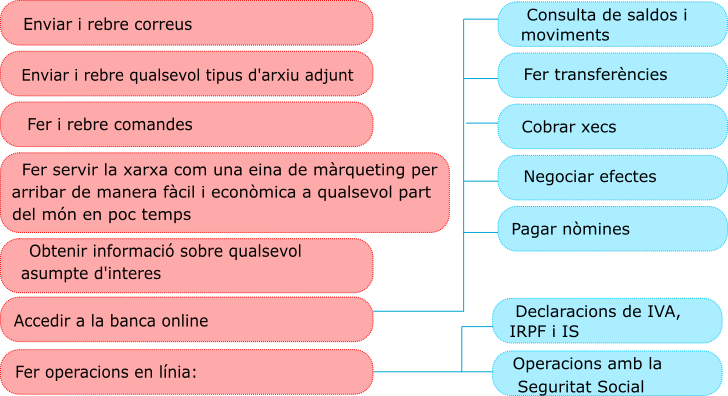

TEMA 2: Organització per departaments
L’organització, el treball en equip, la comunicació (tant interna com externa a l’empresa) i l’organització de la informació i arxiu són aspectes molt importants per a qualsevol empresa.
2.1 Conceptes bàsics
2.1.1 Organització de l’empresa
L’organigrama és una representació de l’organització d’una empresa que reflecteix:
L’estructura de l’empresa amb els seus diferents departaments, seccions, divisions, etcétera.
L’ordre jeràrquic i l’establiment de les relacions entre els diferents graons que el configuren. L’ordre jeràrquic dóna lloc al nivell de responsabilitat.
Els canals de comunicació.
2.1.1.1 Tipus d’organigrama
El que més s’utilitza és l’organigrama funcional. Es caracteritza per agrupar les activitats per departaments segons les funcions bàsiques de l’empresa.

Figura1: Exemple d’organigrama funcional

Figura2: Exemple d’organigrama matricial
Recerca de informació sobre tipus d’organigrames, gràfiques, significat i exemples.
2.1.1.2 Avantatges i inconvenients de la utilització d’organigrames
Avantatges
- Les tasques i funcions de cada treballador estan delimitades i definides amb claredat.
- Facilita i deixa clares les relacions entre els diferents òrgans de l’empresa, evitant malentesos i conflictes.
- Treu a la llum defectes que hi ha en diferents àmbits de l’empresa.
- Ajuda a l’orientació i a la integració dels nous admesos.
- Permet programar amb claredat les línies de promoció de les persones de l’empresa.
- Proporciona a les persones alienes a l’empresa una visió clara i ràpida de l’estructura organitzativa.
Inconvenients
- Simplifica la complexa realitat de les relacions que es donen entre els diferents llocs.
- Té en compte, gairebé exclusivament, relacions jeràrquiques.
- No té cura de les relacions funcionals.
- Reprodueix l’estructura en el moment de la seua elaboració, per la qual cosa a vegades no correspon amb la realitat.
- Suposa un cost considerable.
- S’ha d’actualitzar constantment.
2.1.2 Qué és el treball en equip?
El treball en equip implica un grup de persones traballant de manera coordinada en l’execució d’un projecte. El resultat final és responsabilitat de l’equip, però no de cadascun dels seus membres de manera independent.
Cada membre de l’equip és responsable d’una tasca i només si tots compleixen la seua funció serà possible tirar endavant el projecte.
El treball en equip no és només la suma de les aportacions individuals. Un grup de persones que treballen juntes però sense cap coordinació, en el qual cada un fa la seua feina de manera individual sense comptar amb els altres, no forma un equip.Per exemple:
Un grup de mecànics d’un taller, en el qual cadascun és responsable dels cotxes que repara, no forma un equip.
Un grup de professionals mèdics en una sala d’operacions (cirurgià, anestesista, infermera i especialista cardiovascular) sí que formen un equip. Tots treballen junts, cadascun en la seva especialitat, i el treball de tots junts és fonamental per tal que l’operació tinga èxit, per la qual cosa han d’estar coordinats.
2.2 Comunicació i transmisió
La necessitat de comunicació és indubtable en qualsevol àmbit de la vida, i també en el treball, sobretot quan es treballa en equip.
A. Transmissió de la informació interna de l’empresa
És la que es produeix dins l’empresa mateixa. Una bona comunicació millora el clima laboral i ajuda a reconèixer possibles deficiències dins l’organització. Una bona xarxa de comunicació interna ajuda també a agilitzar la feina.
B. Transmissió de la informació externa
Per la seua importància, la comunicació de l’empresaamb l’entorn exterior meriex una atenció especial, principalment pel que fa a l’atenció al client, que pot arribar a ser un element promocional per augmentar les vendes tan poderós com la publicitat o els descomptes.
Aterure un client nou és més difícil i costós que mantenir-ne un. Per això, actualment les empreses tracten de fidelitzar els seus clients oferint-los un bon servei.
Els clients augmentaran de nombre si coneixem les seues necessitats i si les sabem satisfer. Aquestes necessitats canvien, per la qual cosa l’empresa ha d’adaptar els seus productes, serveis i processos a aquests canvis amb la participació de tots els seus departaments.
És important recordar que un client passa a ser com un corresponsal del nostre producte pea a altres possibles clients.
C. Formes de comunicació i transmissió externa
La comunicació oral
De tots els mitjans orals de comunicació en l’empresa el m’es important és sens dubte el telèfon, per la freqüència amb què s’utilitza. Ens permet comunicar-nos amb l’exterior: clients, proveïdors, entitats bancàries, etc. És important que la persona que manté la conversa telefònica tinga un tracte cortès i adequat, que utilitze un llenguatge correcte i que mostre interès pel seu interlocutor.
A més, gràcies a la informàtica podem comptar amb la videoconferència, que és la comunicació a temps real entre dues o més persones que es troben en un espai físic diferent i que es comuniquen a través d’internet utilitzant àudio i també vídeo. Permet la comunicació sense necessitat de desplaçar-se.
| IMPORTANT |
| Regles importants per a la persona que atén un client: |
| 1. Mostar atenció i empatia |
| 2. Tenir una presentació adequada |
| 3. Mostrar una atenció personal i amable |
| 4. Tenir a la mà informació adequada |
| 5. Tenir una expressió corporal i oral adequada |
La comunicació escrita
La correspondència comercial té un paper determinant en la comunicació d’una empresa: estableix una relació entre aquesta i els agents externs (clients, proveïdors, creditors, etcétera) i proporciona una determinada imatge de l’empresa.
La carta comercial és la manera de comuncació tradicional més important en una empresa, malgrat que actualment s’estan imposant amb força les formes de comuncació a través de xarxa (correu electrònic, adreces web o xarxes socials).
Per fer una redacció correcta d’una carta, s’ha de tenir en compte una sèrie de normes bàsiques:
- Netedat i correcció.
- Frases curtes, senzilles, ben redactades i sense faltes d’ortografia.
- Tracte cortès.
A més, hi ha una sèrie de consells que seran determinants en l’efectivitat de la carta comercial:
| Si comencem en plural, s’ha de continuar així durant tota la carta. |
| Si responem una carta, s’ha de citar la data, la referència i l’assumpte. |
| La justificació completa dóna lloc a documents estèticament uniformes. El marge dret sense justificar proporciona domuments més vius i directes. |
| Fer servir el doble espai entre línies permet una lectura més fàcil. |
| Els pàragrafs curts conviden més a la lectura que els que són massa llargs. |
La comunicació a través d’internet
Internet s’ha imposat amb força com a mitjà de comunicació a l’empresa. Per menuda que siga, es fan les tasques de gestió i comunicació a través d’un ordinador i la xarxa.
El correu electronic (e-mail). Serveix per enviar i rebre missatges de text, imatges i arxius complets.
Les pàgines web també tenen utilitat comercial. A través d’aquestes podem obtenir gran quantitat d’informació, conèixer altres empreses i donar-nos a conèixer.
També és un mitjà de publicitat important perquè podem arribar a un gran nombre de persones i empreses en tot el món i a qualsevol hora. A més, podem trobar adreces, catàlegs de productes, preus, condicions de lliurament i de pagament, dades sobre el mercat, etc. També podem fer directament comandes de compra i rebre comandes de possibles clients.

- Altres formes d’ús de la xarxa: encara que tenen un àmbit d’aplicació molt present en el terreny de les relacions personals, també poden resultar de molta ajuda en l’àmbit comercial. Les més importants són:
Les llistes de correu: són bases de dades amb adreces de persones o empreses que tenen interessos comuns i que serveixen per enviar missatges, per intercanviar notícies o per organitzar grups de debat o negociació.
Els grups de notícies o newsgroups: serveixen per col·locar o rebre missatges, notícies o informació de qualsevol tipus agrupada per temes d’interés. Així, una empresa pot estar al corrent de tota l’actualitat i les novetats que van sorgint sobre qualsevol assumpte que consideri interessant per al seu negoci.
Les xarxes socials: són d’aparició més recent. Amb aquestes podem crear un grup d’empreses amb les quals mantenim relacions i utilitzar-les com a mitjà de comunicació.
2.3 Organització i arxiu de la informació
L’empresa genera una gran quantitat d’informació i de documentació que cal organitzar i conservar. L’organització de la informació es du a terme:
Per l’interés de l’empresa. És necessari per a un bon funcionament.
Per exigències legals. El Codi de Comerç indica: *“Els empresaris conservaran els llibres, correspondència, documentació i justificants relatius al seu negoci, degudament ordenats, durant sis anys apartir del darrer assentament fet als llibres, tret del que s’estableix per disposicions generals o especials.”
S’han d’establir els criteris i organitzar la manera de dear i arxivar la informació i els documents de l’empresa. Quan comencem la Simulació per departaments, tots els sistemes d’arxiu han d’estar degudament preparats.
| IMPORTANT |
| El Certificat Digital de la Casa de Moneda i Timbre (CERES) |
| El Certicicat d’Usuari és un document digital que conté, entre altres, les dades identificatives de l’usuari. |
| a. Permet identificar-se a Internet i intercanviar informació amb altres persones amb la garantia que només l’usuari i el seu interlocutor hi poden accedir. |
| b. Permet fer de manera segura tràmits amb l’Administració Pública (Hisenda i Seguritat Social) a través d’internet. |
| c. S’eviten els desplaçaments i les esperes innecessàries. |
| d. No cal fer servir cap aplicació addicional, es pot fer a través de qualsevol navegador web. |
| e. És gratuït. Per a més informació i per obtenir el Certificat d’Usuari, consulta aquesta adreça: www.cert.fnmt.es |
2.4 Tasques per departaments a l’empresa
| Llocs de treball |
Funcions | Llocs de treball |
Funcions |
|---|---|---|---|
| Magatzem | - Confecció d'ordres de reposició - Registre d'entrada de mercaderies - Registre de sortida de mercaderies - Inventari d'existències |
Compres | - Emissió de comandes i control de les recepcions - Reclamació de comandes endarrerides - Control de la documentació - comprovació dels albarans i les factures de recepció de mercaderia |
| Vendes | - Recepció de comandes - Transports - Facturació |
Gestió comptable |
- Manteniment del pla general comptable - Registre dels assentaments comptables - Manteniment de l'aplicació comptable - Elaboració de balanços - Comprovació periòdica dels saldos comptables - Conciliació bancaria |
| Tresoreria | - Gestió i control de cobraments i pagaments - Confecció de remeses bancàries - Control de saldos bancaris - Previsions de tresoreria - Cobertura de les necessitats de tresoreria: crèdits, prèstecs, descompte comercial, ... - Reclamacions d'impagats |
Recursos humans |
- Selecció de personal - Confecció de contractes laborals -Pagament de les nòmines - Liquidació del pagament a la Seguretat Social |